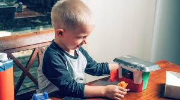

Acerca de Nosotros
En Juguetes Reciclados, creemos en el poder de la creatividad y el reciclaje para crear un mundo mejor. Nuestra misión es educar a las personas sobre la importancia de reutilizar materiales y mostrar cómo pueden convertirse en juguetes innovadores y sostenibles. Cada juguete está pensado para reducir el impacto ambiental y estimular la creatividad en niños y adultos por igual.
"En Juguetes Reciclados, creemos en el poder del reciclaje para educar y entretener. Nuestro equipo está comprometido con el diseño de juguetes ecológicos y didácticos, pensados para despertar la creatividad y promover el respeto por el planeta. Cada uno de nuestros productos cuenta una historia de sostenibilidad y cuidado ambiental. ¡Conócenos y descubre cómo nuestra pasión impulsa el cambio!"